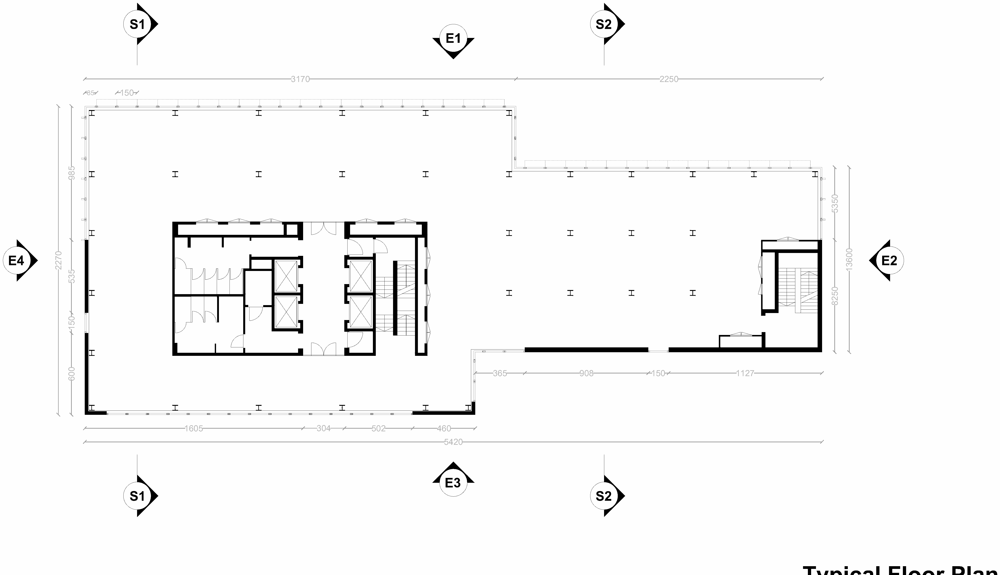
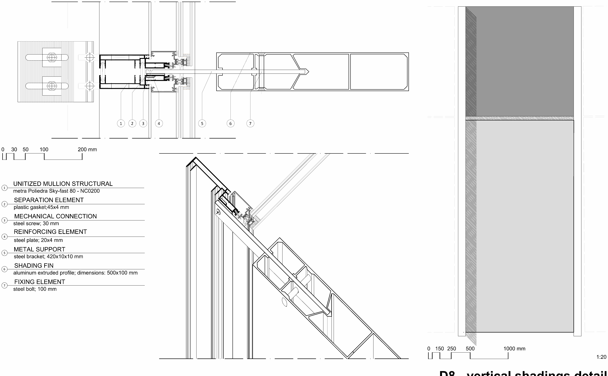
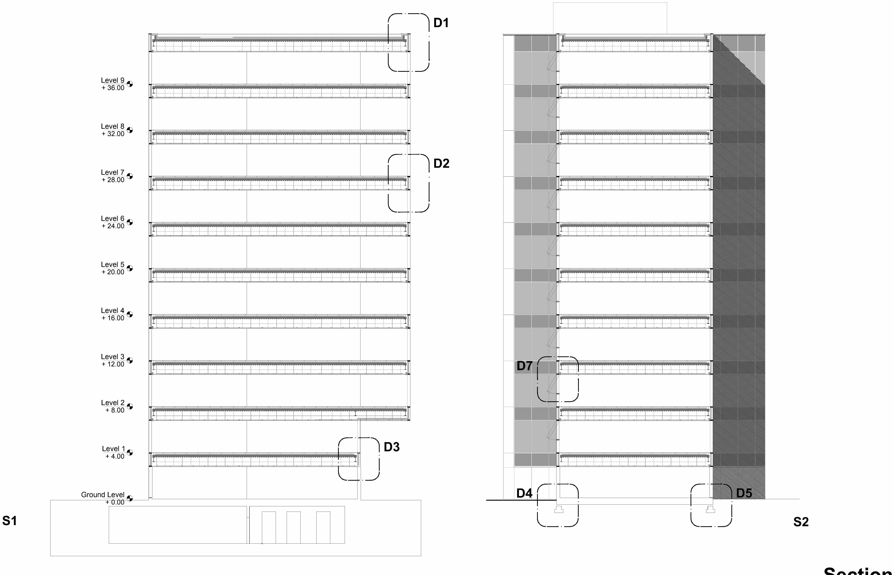
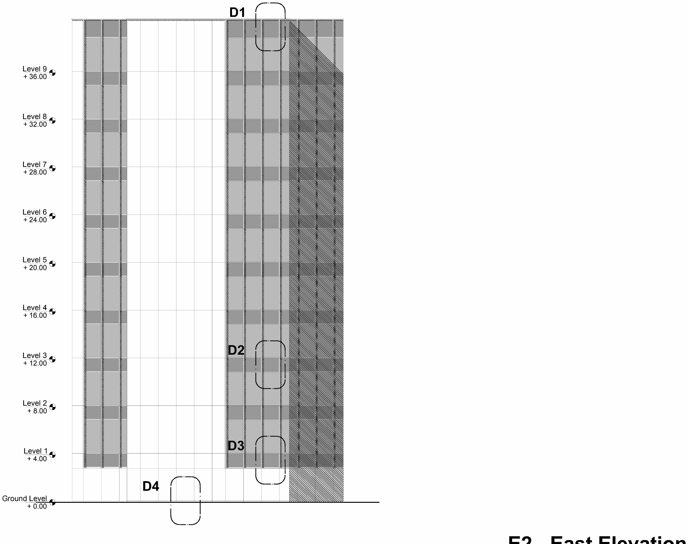
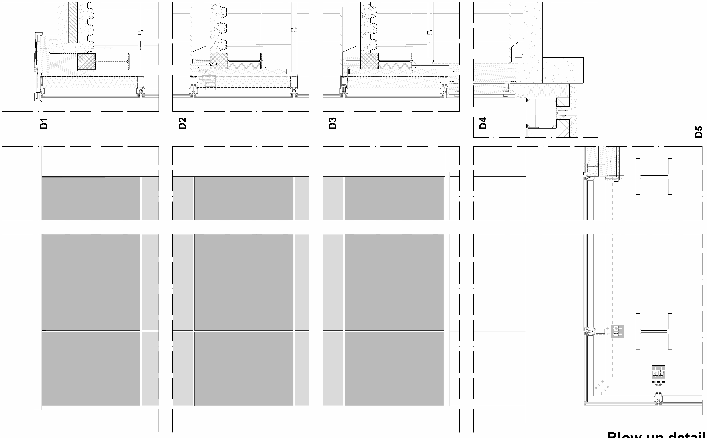
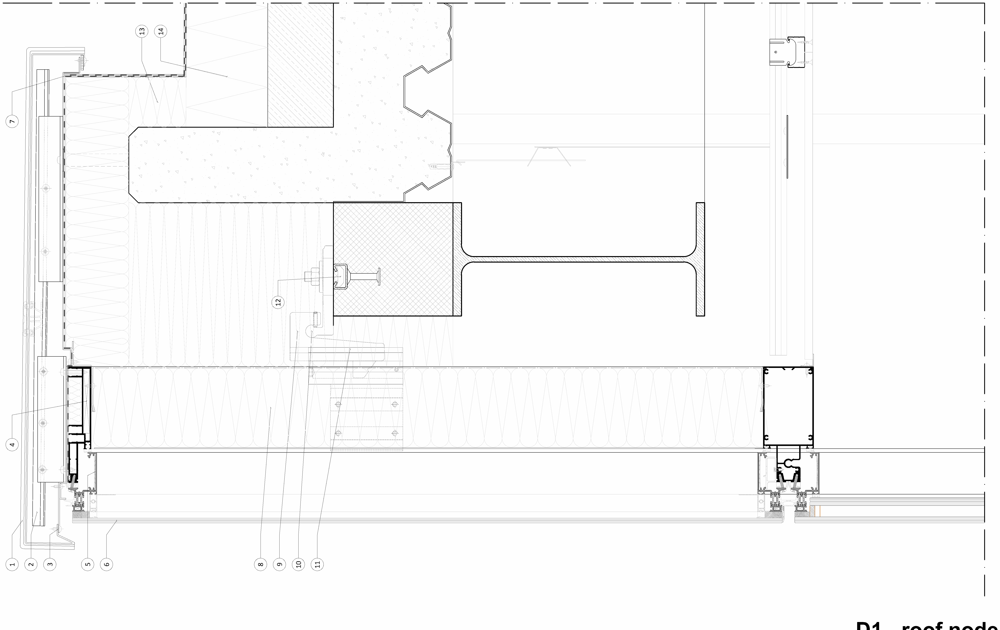
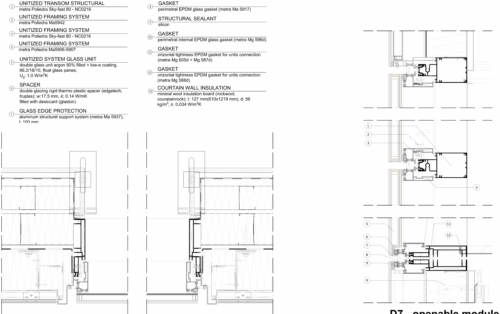

Full engineering design of a unitised curtain-wall façade for a 10-storey office building in Dublin: glazing selection, structural verification, thermal and condensation analysis, shading, acoustics, fire safety, maintenance and sustainability.
A unitised curtain-wall system designed for an office building in Dublin, Ireland — ten storeys above ground plus two below, ~30 m tall. The volume combines two rectangles organised around functional and structural cores. The primary structure is composite: HEA 260 columns and IPE 300 beams working with RC walls for lateral stability, on a 20 cm metal-deck slab.

Using the AGC glass configurator, successive double-glazed trials (argon-filled) were optimised for thermal, visual and acoustic performance. A low-e coating on surface 3 dropped the transmittance from 2.6 to 1.3 W/m²K; a final increase in glass thickness, cavity depth and a new coating reached U = 1.0 W/m²K.
Thermal transmittance reduced across the design trials (W/m²K).
Loads were derived to Eurocode (dead, wind, snow, seismic, horizontal live). The governing combination is wind suction + live load. Frame actions on mullions and transoms were computed by hand and the frame–glass interface verified in MEPLA (FE for structural glass). All SLS and ULS checks pass with large margins.
Characteristic values (kN/m² except seismic in kN). Wind shown as pressure; suction governs at −2.07 kN/m².
Maximum deflection f_max stays well under the allowable f_lim for every frame member (mm, log scale).
Overall façade transmittance was built up from THERM 2-D joint models plus centre-of-component U-values, area-weighted per EN ISO 12631. The result comfortably beats the Irish requirement of U = 1.4 W/m²K.
Centre and joint U-values of the fixed façade (W/m²K).
Fixed and openable modules vs the 1.4 W/m²K limit.
With interior air at 20 °C / 50% RH the dew point is 9.3 °C. The minimum interior surface temperature of every thermal joint (from THERM) stays above it — no condensation.
All seven joints sit above the 9.3 °C dew-point line (°C).
Solar control combines internal curtains with orientation-specific external devices: vertical fins on east/west and horizontal overhangs on north/south, assessed to EN 14501 for thermal (g_tot, q_i,tot) and visual comfort (glare, daylight, view).

The aluminium system (Metra RE.AL.E. recyclable alloy) and mineral-wool insulation support end-of-life recovery; the high-performance envelope cuts heating and cooling demand, while shading and daylight control reduce lighting energy and improve indoor environmental quality (thermal, visual, acoustic and air quality).
The façade was fully detailed at 1:4 — twenty drawing tables covering plans, elevations, section and eight construction nodes (D1–D8). A selection:




